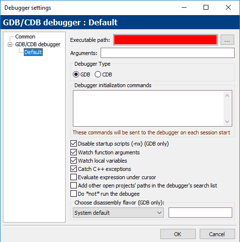
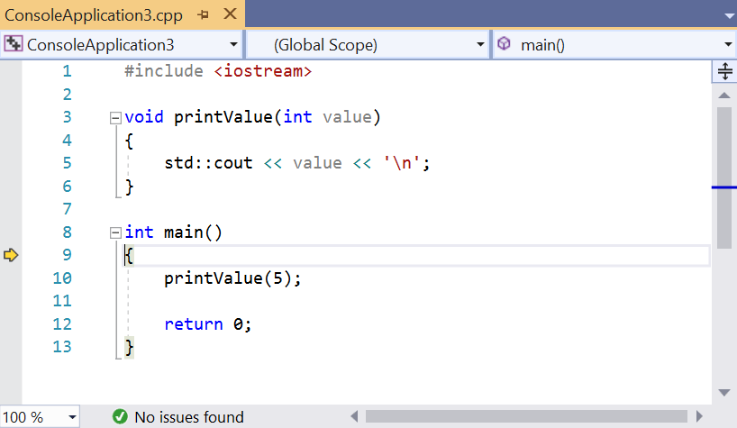
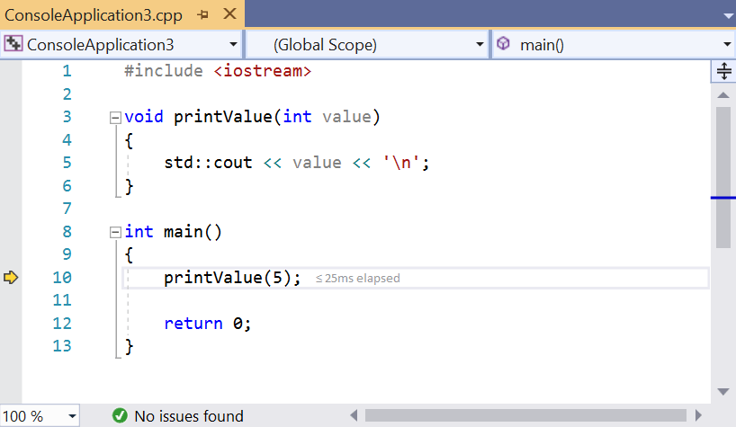
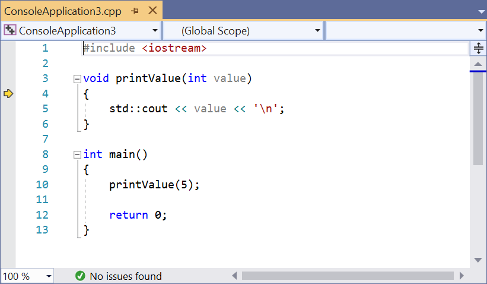
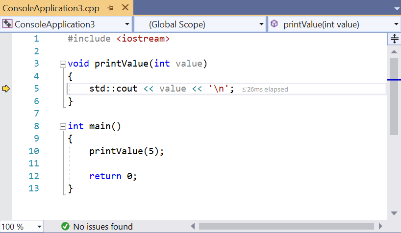

3.6 — Utiliser un débogueur intégré : l'exécution pas à pas
Lorsque vous lancez votre programme, l'exécution commence en haut de la fonction main, puis progresse séquentiellement instruction par instruction, jusqu'à la fin du programme. À tout moment pendant l'exécution, le programme garde la trace de nombreuses choses : la valeur des variables utilisées, les fonctions qui ont été appelées (afin que, lorsque ces fonctions retournent, le programme sache où revenir), ainsi que le point d'exécution courant dans le programme (afin de savoir quelle instruction exécuter ensuite). L'ensemble de ces informations suivies s'appelle l'état du programme (ou simplement état, en bref).
Dans les leçons précédentes, nous avons exploré différentes façons de modifier votre code pour faciliter le débogage, notamment afficher des informations de diagnostic ou utiliser un journal (logger). Ce sont des méthodes simples pour examiner l'état d'un programme pendant son exécution. Bien qu'elles puissent être efficaces si on les utilise correctement, elles ont tout de même des inconvénients : elles exigent de modifier votre code, ce qui prend du temps et peut introduire de nouveaux bogues, et elles encombrent votre code, rendant le code existant plus difficile à comprendre.
Derrière les techniques présentées jusqu'ici se cache une hypothèse implicite : une fois le code lancé, il s'exécute jusqu'au bout (en ne s'interrompant que pour accepter une saisie), sans que nous ayons la possibilité d'intervenir et d'inspecter les résultats du programme à l'endroit de notre choix.
Or, que se passerait-il si nous pouvions lever cette hypothèse ? Heureusement, la plupart des EDI modernes sont livrés avec un outil intégré appelé débogueur (debugger), conçu justement pour cela.
Le débogueur
Un débogueur est un programme informatique qui permet au programmeur de contrôler la façon dont un autre programme s'exécute et d'examiner l'état de ce programme pendant son exécution. Par exemple, le programmeur peut utiliser un débogueur pour exécuter un programme ligne par ligne, en examinant au passage la valeur des variables. En comparant la valeur réelle des variables à celle attendue, ou en suivant le chemin d'exécution à travers le code, le débogueur peut grandement aider à traquer les erreurs sémantiques (de logique).
La puissance du débogueur repose sur deux éléments : la capacité de contrôler précisément l'exécution du programme, et la capacité de visualiser (et, si besoin, de modifier) l'état du programme.
Initialement, les débogueurs (comme gdb) étaient des programmes séparés dotés d'interfaces en ligne de commande, où le programmeur devait taper des commandes obscures pour les faire fonctionner. Plus tard, des débogueurs (comme les premières versions du Turbo Debugger de Borland) étaient toujours des programmes séparés, mais proposaient une interface graphique pour faciliter leur utilisation. Aujourd'hui, de nombreux EDI modernes disposent d'un débogueur intégré (integrated debugger), c'est-à-dire un débogueur qui utilise la même interface que l'éditeur de code, de sorte que vous pouvez déboguer dans le même environnement que celui dans lequel vous écrivez votre code (au lieu de devoir changer de programme).
Bien que les débogueurs intégrés soient très pratiques et recommandés pour les débutants, les débogueurs en ligne de commande sont bien pris en charge et restent couramment utilisés dans les environnements qui ne disposent pas d'interface graphique (par exemple, les systèmes embarqués).
La quasi-totalité des débogueurs modernes proposent le même ensemble de fonctionnalités de base. En revanche, il existe peu de cohérence dans la façon dont les menus donnant accès à ces fonctionnalités sont organisés, et encore moins dans les raccourcis clavier. Bien que nos exemples utilisent des captures d'écran de Microsoft Visual Studio (et nous verrons aussi comment tout faire dans Code::Blocks), vous ne devriez pas avoir de mal à trouver comment accéder à chaque fonctionnalité dont nous parlerons, quel que soit l'EDI que vous utilisez.
Astuce
Les raccourcis clavier du débogueur ne fonctionnent que si l'EDI/le débogueur intégré est la fenêtre active.
Le reste de ce chapitre sera consacré à l'apprentissage de l'utilisation du débogueur.
Astuce
Ne négligez pas l'apprentissage du débogueur. À mesure que vos programmes gagnent en complexité, le temps que vous passerez à apprendre à bien utiliser le débogueur intégré sera dérisoire comparé au temps que vous économiserez en trouvant et en corrigeant les problèmes.
Attention
Avant de poursuivre cette leçon (et les leçons suivantes portant sur l'utilisation du débogueur), assurez-vous que votre projet est compilé avec une configuration de compilation de débogage (voir 0.9 -- Configurer votre compilateur : les configurations de compilation pour plus d'informations).
Si vous compilez votre projet avec une configuration de version (release) à la place, les fonctionnalités du débogueur risquent de ne pas fonctionner correctement (par exemple, lorsque vous tenterez d'entrer dans votre programme, il se contentera de l'exécuter).
Pour les utilisateurs de Code::Blocks
Si vous utilisez Code::Blocks, votre débogueur peut être correctement configuré ou non. Vérifions cela.
Tout d'abord, allez dans le menu Settings > Debugger…. Ensuite, ouvrez l'arborescence GDB/CDB debugger à gauche et choisissez Default. Une boîte de dialogue devrait s'ouvrir, ressemblant à ceci :

Si vous voyez une grande barre rouge à l'emplacement du « Executable path », vous devez localiser votre débogueur. Pour cela, cliquez sur le bouton … à droite du champ Executable path. Ensuite, trouvez le fichier « gdb32.exe » sur votre système (le mien se trouvait dans C:\Program Files (x86)\CodeBlocks\MinGW\bin\gdb32.exe). Puis cliquez sur OK.
Pour les utilisateurs de Code::Blocks
Certains rapports font état de problèmes du débogueur intégré de Code::Blocks (GDB) avec la reconnaissance de chemins de fichiers contenant des espaces ou des caractères non anglais. Si le débogueur semble mal fonctionner pendant que vous suivez ces leçons, cela pourrait en être la raison.
Pour les utilisateurs de VS Code
Pour configurer le débogage, appuyez sur Ctrl+Maj+P et sélectionnez « C/C++: Add Debug Configuration », puis « C/C++: g++ build and debug active file ». Cela devrait créer et ouvrir le fichier de configuration launch.json. Remplacez la valeur de « stopAtEntry » par true :
"stopAtEntry": true,
Ensuite, ouvrez main.cpp et lancez le débogage en appuyant sur F5, ou en appuyant sur Ctrl+Maj+P et en sélectionnant « Debug: Start Debugging and Stop on Entry ».
L'exécution pas à pas
Nous allons commencer notre exploration du débogueur en examinant certains outils de débogage qui permettent de contrôler la façon dont un programme s'exécute.
L'exécution pas à pas (stepping) désigne un ensemble de fonctionnalités liées du débogueur qui nous permettent d'exécuter notre code instruction par instruction (en avançant pas à pas).
Il existe plusieurs commandes d'exécution pas à pas apparentées, que nous verrons tour à tour.
Step into
La commande step into exécute la prochaine instruction du chemin d'exécution normal du programme, puis suspend l'exécution du programme afin que nous puissions examiner son état à l'aide du débogueur. Si l'instruction en cours d'exécution contient un appel de fonction, step into fait sauter le programme au début de la fonction appelée, où il s'arrête.
Examinons un programme très simple :
#include <iostream>
void printValue(int value)
{
std::cout << value << '\n';
}
int main()
{
printValue(5);
return 0;
}
Déboguons ce programme à l'aide de la commande step into.
Commencez par repérer la commande de débogage step into, puis exécutez-la une fois.
Pour les utilisateurs de Visual Studio
Dans Visual Studio, la commande step into est accessible via le menu Debug > Step Into, ou en appuyant sur la touche F11.
Pour les utilisateurs de Code::Blocks
Dans Code::Blocks, la commande step into est accessible via le menu Debug > Step into, ou en appuyant sur la combinaison Maj-F7.
Pour les utilisateurs de VS Code
Dans VS Code, la commande step into est accessible via Run > Step Into.
Pour les autres compilateurs / EDI
Si vous utilisez un autre EDI, vous trouverez probablement la commande step into dans un menu Debug ou Run.
Lorsque votre programme n'est pas en cours d'exécution et que vous lancez la première commande de débogage, vous pouvez voir plusieurs choses se produire :
- Le programme sera recompilé si nécessaire.
- Le programme commencera à s'exécuter. Comme notre application est un programme console, une fenêtre de sortie console devrait s'ouvrir. Elle sera vide, car nous n'avons encore rien affiché.
- Votre EDI peut ouvrir des fenêtres de diagnostic, pouvant porter des noms tels que « Diagnostic Tools », « Call Stack » ou « Watch ». Nous verrons plus tard à quoi certaines d'entre elles servent ; pour l'instant, vous pouvez les ignorer.
Comme nous avons effectué un step into, vous devriez maintenant voir apparaître un marqueur à gauche de l'accolade ouvrante de la fonction main (ligne 9). Dans Visual Studio, ce marqueur est une flèche jaune (Code::Blocks utilise un triangle jaune). Si vous utilisez un autre EDI, vous devriez voir quelque chose qui remplit le même rôle.

Cette flèche indique que la ligne pointée sera exécutée en premier. Ici, le débogueur nous indique que la prochaine ligne à exécuter est l'accolade ouvrante de la fonction main (ligne 9).
Choisissez step into (avec la commande appropriée à votre EDI, listée ci-dessus) pour exécuter l'accolade ouvrante, et la flèche passera à l'instruction suivante (ligne 10).

Cela signifie que la prochaine ligne à exécuter est l'appel à la fonction printValue.
Choisissez à nouveau step into. Comme cette instruction contient un appel à printValue, nous entrons dans la fonction, et la flèche se place en haut du corps de printValue (ligne 4).

Choisissez encore step into pour exécuter l'accolade ouvrante de la fonction printValue, ce qui fait avancer la flèche à la ligne 5.

Choisissez encore step into, ce qui exécutera l'instruction std::cout << value << '\n' et fera passer la flèche à la ligne 6.
Attention
La version de operator<< utilisée pour l'affichage est implémentée sous forme de fonction. Par conséquent, votre EDI peut plutôt entrer dans l'implémentation de la fonction operator<<.
Si cela se produit, votre EDI ouvrira un nouveau fichier de code, et le marqueur de flèche se placera en haut d'une fonction nommée operator<< (cette fonction fait partie de la bibliothèque standard). Fermez le fichier de code qui vient de s'ouvrir, puis repérez et exécutez la commande de débogage step out (les instructions figurent plus bas dans la section « step out », si vous avez besoin d'aide).
Maintenant que std::cout << value << '\n' a été exécuté, nous devrions voir la valeur 5 apparaître dans la fenêtre console.
Astuce
Dans une leçon précédente, nous avons mentionné que std::cout est bufferisé, ce qui signifie qu'il peut y avoir un délai entre le moment où vous demandez à std::cout d'afficher une valeur et celui où il le fait réellement. Pour cette raison, il se peut que la valeur 5 n'apparaisse pas encore à ce stade. Pour garantir que toute la sortie de std::cout soit affichée immédiatement, vous pouvez ajouter temporairement l'instruction suivante en haut de votre fonction main() :
std::cout << std::unitbuf; // active le vidage automatique pour std::cout (pour le débogage)
Pour des raisons de performances, cette instruction doit être supprimée ou mise en commentaire après le débogage.
Si vous ne souhaitez pas ajouter, supprimer, commenter ou décommenter continuellement l'instruction ci-dessus, vous pouvez l'encadrer dans une directive de compilation conditionnelle du préprocesseur (abordée dans la leçon 2.10 -- Introduction au préprocesseur) :
#ifdef DEBUG
std::cout << std::unitbuf; // active le vidage automatique pour std::cout (pour le débogage)
#endif
Vous devrez vous assurer que la macro de préprocesseur DEBUG est définie, soit quelque part au-dessus de cette instruction, soit dans les paramètres de votre compilateur.
Choisissez à nouveau step into pour exécuter l'accolade fermante de la fonction printValue. À ce stade, printValue a fini son exécution et le contrôle revient à main.
Vous remarquerez que la flèche pointe à nouveau vers printValue !
Vous pourriez penser que le débogueur a l'intention d'appeler de nouveau printValue, mais en réalité, il vous indique simplement qu'il quitte l'appel de fonction.
Choisissez step into trois fois de plus. À ce stade, nous avons exécuté toutes les lignes de notre programme, c'est donc terminé. Certains débogueurs mettent fin automatiquement à la session de débogage à ce moment-là, d'autres non. Si le vôtre ne le fait pas, vous devrez peut-être chercher une commande « Stop Debugging » dans vos menus (dans Visual Studio, elle se trouve dans Debug > Stop Debugging).
Notez que Stop Debugging peut être utilisé à n'importe quel moment du processus de débogage pour mettre fin à la session.
Félicitations, vous avez maintenant parcouru un programme pas à pas et observé l'exécution de chaque ligne !
Astuce
Dans les prochaines leçons, nous explorerons d'autres commandes du débogueur, dont certaines ne seront disponibles que si le débogueur est déjà en cours d'exécution. Si la commande de débogage souhaitée n'est pas disponible, utilisez step into sur votre code pour démarrer le débogueur, puis réessayez.
Step over
Comme step into, la commande step over exécute la prochaine instruction du chemin d'exécution normal du programme. Cependant, alors que step into entre dans les appels de fonction pour les exécuter ligne par ligne, step over exécute la fonction entière sans s'arrêter, et vous rend la main une fois la fonction exécutée.
Pour les utilisateurs de Visual Studio
Dans Visual Studio, la commande step over est accessible via le menu Debug > Step Over, ou en appuyant sur la touche F10.
Pour les utilisateurs de Code::Blocks
Dans Code::Blocks, la commande step over s'appelle plutôt Next line, et est accessible via le menu Debug > Next line, ou en appuyant sur la touche F7.
Pour les utilisateurs de VS Code
Dans VS Code, la commande step over est accessible via Run > Step Over, ou en appuyant sur la touche F10.
Voyons un exemple où nous contournons l'appel de fonction à printValue avec step over :
#include <iostream>
void printValue(int value)
{
std::cout << value << '\n';
}
int main()
{
printValue(5);
return 0;
}
Commencez par utiliser step into sur votre programme jusqu'à ce que le marqueur d'exécution soit à la ligne 10 :
Choisissez maintenant step over. Le débogueur exécutera la fonction (qui affiche la valeur 5 dans la fenêtre de sortie console), puis vous rendra la main sur l'instruction suivante (ligne 12).
La commande step over offre un moyen pratique de sauter les fonctions dont vous êtes certain qu'elles fonctionnent déjà, ou que vous ne souhaitez pas déboguer pour le moment.
Step out
Contrairement aux deux autres commandes d'exécution pas à pas, step out n'exécute pas seulement la ligne de code suivante. Elle exécute en revanche tout le code restant de la fonction en cours d'exécution, puis vous rend la main une fois que la fonction a retourné.
Pour les utilisateurs de Visual Studio
Dans Visual Studio, la commande step out est accessible via le menu Debug > Step Out, ou en appuyant sur la combinaison Maj-F11.
Pour les utilisateurs de Code::Blocks
Dans Code::Blocks, la commande step out est accessible via le menu Debug > Step out, ou en appuyant sur la combinaison Ctrl-F7.
Pour les utilisateurs de VS Code
Dans VS Code, la commande step out est accessible via Run > Step Out, ou en appuyant sur la combinaison Maj+F11.
Voyons un exemple avec le même programme que précédemment :
#include <iostream>
void printValue(int value)
{
std::cout << value << '\n';
}
int main()
{
printValue(5);
return 0;
}
Utilisez step into sur le programme jusqu'à ce que vous soyez à l'intérieur de la fonction printValue, avec le marqueur d'exécution à la ligne 4.
Choisissez ensuite step out. Vous remarquerez que la valeur 5 apparaît dans la fenêtre de sortie, et que le débogueur vous rend la main une fois la fonction terminée (à la ligne 10).
Cette commande est particulièrement utile lorsque vous êtes entré par mégarde dans une fonction que vous ne souhaitez pas déboguer.
Un pas de trop
Lors de l'exécution pas à pas d'un programme, vous ne pouvez normalement avancer que dans un seul sens. Il est très facile de dépasser (de « sauter ») accidentellement l'endroit que vous souhaitiez examiner.
Si vous dépassez votre destination, la solution habituelle consiste à arrêter le débogage, puis à le relancer en faisant attention à ne pas dépasser la cible cette fois-ci.
Step back
Certains débogueurs (comme Visual Studio Enterprise Edition et rr) ont introduit une capacité d'exécution pas à pas généralement appelée step back ou reverse debugging (débogage inversé). L'objectif du step back est de revenir en arrière sur la dernière étape, afin de remettre le programme dans un état antérieur. Cela peut être utile si vous avez dépassé une cible, ou si vous souhaitez réexaminer une instruction qui vient de s'exécuter.
La mise en œuvre du step back exige beaucoup de sophistication de la part du débogueur (car il doit conserver un état de programme distinct pour chaque étape). En raison de cette complexité, cette fonctionnalité n'est pas encore standardisée et varie selon les débogueurs. Au moment de la rédaction (janvier 2019), ni l'édition Community de Visual Studio ni la dernière version de Code::Blocks ne prennent en charge cette capacité. Espérons qu'à l'avenir elle se répandra dans ces produits et sera accessible à un plus large public.
Source originale : https://www.learncpp.com/cpp-tutorial/using-an-integrated-debugger-stepping/